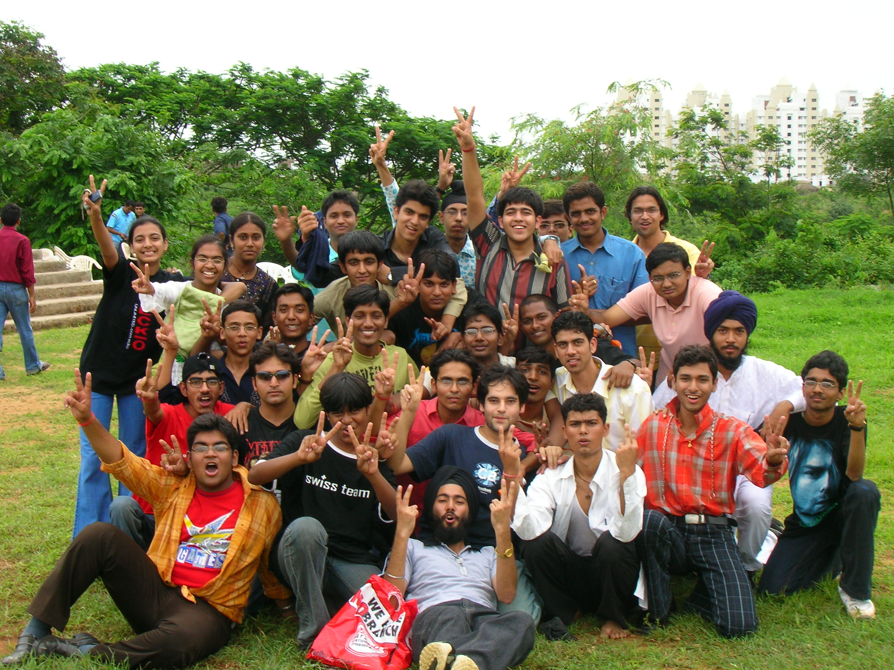

The Yearbook - Commemorating 2005-09!
Aditya Singal's profile information
Name - Aditya SingalBirthday - 30 Jan, 1987
Email - adityasingal.23@gmail.com
Address - #527/2, Gandhi Lane, College Road, Civil Lines, Ludhiana, Punjab - 141001
Phone - 9949503878
Hobbies - Movies, comics...
Testimonials written to Aditya Singal
Aditya Singal's Album

Farewell '09

Birthday on BB court

{kind=link}
Freshers '05
Testimonials
For Shashank AgrawalShashank jo ki Agrawal Ji ke naam se bhi jaana aur bulaya jaata hai hamare batch ke un gine-chune logon mein se hain jinhein CSE mili thi lekin phir bhi apni ichchha se dual mein convert ho gaye
 . Bande ka research mein achanak se hi interest jaag gaya aur isne MS karne ki thaan li.
. Bande ka research mein achanak se hi interest jaag gaya aur isne MS karne ki thaan li.
Sharir se banda dubla-patla sa hai, aur iski bhi body banane ki chaah hai. Uske liye ise har thode din ke baad josh aata hai. Lekin bina ek bhi din gym jaye woh josh thanda bhi ho jaata hai
 . I hope ki kisi din teri body banane ki ichchha poori ho jaye .
. I hope ki kisi din teri body banane ki ichchha poori ho jaye .
Padhaai mein banda phodu hai. Aur uska kaaran mujhe EPP ka project iske saath karte huye samajh mein aa gaya tha. Yeh akela tha jisne sahi time par project ke liye kaam karna shuru kiya aur mujhse aur Yogi se bhi karvaya. Kaafi mehnat ki aur uske baad phodu presentation di.
TT bhi mast khelta hai and to see him smash a ball is a treat. Bahut baar opponents ke liye bhi treat ho jaati hai, jab yeh ball bahar maarta hai
.
Aajkal apni girlfriend ke alava inke aur love interests bhi khul kar bahar aa rahe hain
. Aur us se humein pata chala hai ki yeh Richeek ki taraf kuchh khaas hi attracted hain  . Aur yeh is baat ko kisi se chhupata nahin hai, balki khul kar sabhi ko batata hai aur khushi-khushi ise accept bhi karta
. Aur yeh is baat ko kisi se chhupata nahin hai, balki khul kar sabhi ko batata hai aur khushi-khushi ise accept bhi karta  .
.
All the best for your future.
For Kapil Bajaj
Kapil Bajaj hamare batch ka coolest banda hai, itna cool hai ki agar koi mukka bhi maar de tab bhi apna temper loose nahin karta hai
. Maine bhi iske kandhe bahut dukhaye hain (iske anusaar), ise maar-maar kar . Uske liye yeh mujhe aaj tak sunaata rahta hai, lekin main bura nahin maanta balki ek baar aur maar deta hoon ise .
Banda Rocky ka bahut hi bada fan hai. Aur DC par bhi iska naam Rocky ya Balboa hi rahta hai. Iski life ka pahle ek aim hua karta tha, woh tha Sylvester Stallone jaisi body banane ka (shayad ab bhi hai)
 . Mujhe bhi gym jaane ki inspiration is se hi mili thi.
. Mujhe bhi gym jaane ki inspiration is se hi mili thi.
Dance bahut hi awesome karta hai, aur Vayu ko isne first year ki freshers mein kaafi valuable points dilvaye the apne Michael Jackson wale dance ki badaulat
. Lekin uske baad isne dance nahin kiya, aur ladkiyon ki ise dance karte dekhne ki khwahish man mein hi rah gayi .
Basketball mast khelta hai aur Vayu ki team ka poora bhaar is bechare ko apne (kamzor) kandhon par uthan padta hai. Lekin uske bawajood bhi yeh ghabrata nahin hai and always gives his best, aur iski isi quality ke kaaran is saal yeh Vayu ki basketball team ko 2nd le aaya

 .
.
First year mein humein iske baare mein pata chala tha ki yeh Somani ka laptop ka bharpoor istemaal karta tha. Jab Somani subah-subah lab se room par aakar so jaata tha tab yeh ek poori movie dekha karta tha
. Bande ne kayi movies ke dialogues tak yaad kar liye the. Aur recently yeh bhi pata chala ki yeh un movies ke actors aur characters par research bhi karta rahta tha, woh bhi wikipedia par .
BC karne ke ise bahut shauk hai. Agar koi aur shikaar na mil raha ho to apne-aap par hi jokes maarne lag jaata hai. Aur Vayu ki basketball team ki to humne iske saath milkar bahut utaari hai
. Lekin phir bhi isne kabhi is baat ka bura nahin maana.
Contd..
For Kapil Bajaj
TV series aur movies dekhna ise bahut pasand hai. DC par pata nahin kaun kaun si TV series padi hain aur isne shayad woh sab dekh rakhi hain. Aur phir unki stories logon ko suna-suna kar logon ko bhi woh series dekhne ke liye majboor kar deta hai
. Lekin FRIENDS se zyada baar isne shayad hi koi series dekhi hogi. Uske 10 ke 10 seasons yeh kam se kam 8-10 baar to dekh hi chuka hoga.
Ab thodi academics ki bhi baat kar li jaye. Padhaai mein banda kaafi achchha hai. Grades ke liye hamesha rota rahta tha. Lekin end mein aakar hamesha achchhe gradesle hi aata tha. Thanks mere liye ECD ki seat chhodne ke liye
, because of that I had the oppurtunity of knowing you and everyone here .
Ant mein ab yahi kahoonga ki thanks for being a great friend
and wish you all the best for your future .For Prateek G V
Prateek is one of the gentlemen of our batch. He is always calm. Bahut kam bolta hai, lekin kaam ki baat hi bolta hai. Haan kabhi-kabhaar BC bhi kar leta hai.
He is very hard working and that became evident to everyone when he worked for placements of the batch and for Felicity '08. The best thing is he keeps doing his work silently and does not ask for any credit in return
.
Isko photography ka kaafi shauk hai. Sabki pics leta rahta hai lekin apni pics nahin lene deta
.
The initiative of Samvedana taken by him is really wonderful and he is working really hard for it. Kabhi party ke liye jaana ho ya ghoomne jaana ho to pata chalta hai ki Prateek nahin jayega kyonki use Samvedana ki meeting attend karni hoti hai. But I really respect you for the work you are doing
.
Dussehra at your home was the best celebration of a festival I had at hyderabad
.
All the best for your future
and hope you succeed in everything you do.For Yogendra Umesh Itankar
Iske itne kisse hain ki un par ek kitaab likhi ja sakti hai ya movie banayi ja sakti hai. Aur yeh un kisson mein samay-samay par additions karta rahta hai. Kisi chhoti shop se yeh mobile recharge nahin karvata kyonki ise achchhi shop se mobile recharge karvana hota hai
.
Academics mein bande ne phod rakha hai. Pahle sem mein 7 SGPA laane ke baad isne 2nd sem mein seedhe 9.17 par jump lagayi thi. Uske baad se to banda phodta aa raha hai. Electronics ke subjects mein ise apne-aap hi interest aa jaata hai, lekin agar computer science ke subjects padhne pad jayein to iska mood off ho jaata hai
. Jis subject ko isne achchhe se samajh liya uska yeh bond ho jaata hai hamesha ke liye. Probability isne aur Ninja ne milkar mujhe pass karvayi thi .
Koi bhi kaam karna ya na karna iske mood par depend karta hai
. Agar iska mood na ho to yeh cricket mein run lete huye pitch ke beech mein ruk jaata hai . Fielding karte huye ball ke peechhe bhagte-bhagte ruk jaata hai . Lekin TT aur Football khelte huye iska mood kabhi off nahin hota aur dono mast khelta hai.
Hamesha cool rahta hai aur gussa kam hi karta hai.
Ab LPU mein isne Senior Lecturer ki position haasil kar li hai aur mujhse Punjabi aur Punjabi ladkiyon ko pataane ke tareeke seekhne ki koshish kar raha hai
.
All the best for your future.
For Subroto Sen
Subroto aka Subbo aka Subbz hamare group balki hamare batch ka sabse bada frustoo hai. Aaj tak shayad hi koi ladki hogi jo ise pasand nahin aayi hogi, jo bhi ladki dikh jaye woh sexy hoti hai
. Vaise ladkon mein bhi ise khaas interest hai, lekin main iske baare mein zyada detail mein baat nahin karoonga .
Iski sabse achchhi baat yeh hai ki yeh bahut hi frank hai, sabse mast tareeke se baat karta hai aur har tarah ki baat karta hai
. Iske favourite topics hai ladkiyaan aur stuff. Inka database kaafi solid hai aur hamesha updated rahta hai. Koi information chahiye ho to Subbo ke paas se mil jaati hai .
Yeh hamare group ka woh banda hai jo most of the times sabka shikaar banta hai. Mauka kuchh bhi ho agar Subbo aas paas hai to Subbo ki li jaani hi hoti hai. Lekin yeh kabhi iska bura nahin maanta, yeh baat mujhe iski kaafi pasand hai. Last mein aakar iska bolna ki ab main kuchh nahin boloonga mujhe hamesha yaad rahega
.
Banda hamare ECE batch mein 2nd rank holder hai. Lekin yeh baat aaj tak kisi ko samajh mein nahin aayi ki agar ise subject samajh mein nahin aata to yeh A ya A- lekar kaise aa jata hai. Hamara best guess hai, prof. aur TA ke saath iske achchhe relations
. Lekin yeh bahut hi helpful hai. Ek baar Bharatiye ko pass karvane ke liye isne LA ke final paper se ek din pahle poori raat jaag kar use shuru se lekar end tak saari LA padhayi thi.
Agar Khurana ise koi challenge de de to iski satak jaati hai. Us case mein kuchh bhi ho jaye ise challenge poora karna hi hota hai.
Vaise to ise gussa nahin aata hai, lekin agar aa jaye to kabhi bhi aur kisi bhi baat par aa sakta hai. Ek baar iski mujhse ladayi bhi ho chuki hai. Lekin phir bhi hamari aadhe ghante ke andar-andar vapis se baat honi shuru ho gayi thi
.
GK iski itni badhiya hai ki ise aaj tak samajh mein nahin aaya ki Chandigarh UT hai, city hai, state hai ki capital hai
. Ise shayad yeh bhi theek se yaad nahin hoga ki India independent kab hua tha . Lekin phir bhi banda mast rahta hai.
Wish you a
For Nitin Jain
ECE ke bonds mein se ek naam Nitin Jain ka bhi hai. Electronics mein baaki sab jahan teer-tukke bhida kar kisi tarah number lekar aate hain
, wahan par agar isne zyada question attempt kar diye ho to extra kiye huye question kaat deta hai . Paper aise likhta hai ki padhne wale ko iski copy samajhne mein itna time lag jaata hoga jitne baaki sabhi copies check karne mein . Ise aata sab kuchh hai lekin paper ke zariye examiner ko samjha nahin pata.
Padhaai ki tarah hi yeh sports mein bhi kaafi achchha hai. Football, TT, Cricket, Volleyball sab khel leta hai aur woh bhi kaafi achchhe se
.
Ek baat jo iski bahut achchhi hai woh yeh hai ki kuchh bhi ho jaye yeh rules follow karta hai
, chahe woh iske banaye huye rules ho ya kisi aur ke banaye huye. Lekin iske rules ki wajah se hamari outing ki jagahein almost 80% se reduce ho jaati hain , but he is very adjusting hamare liye kabhi kabhi yeh akele kahin aur khane ke liye taiyar ho jaata hai. But he is fun to be with, to hum bhi kabhi kabhi adjust kar lete hain aur iski pasand ki jagah par chale jaate hain .
Iske ghar se aane wale samaan ke liye pata nahin college ke kitne log hamesha iske ehsaanmand rahenge
. Kabhi bhi kisi ko bhookh lagi ho to uska sabse pahle nishana hota hai Ninja ka room aur wahan par khane ke liye kuchh na kuchh mil hi jaata hai. Kabhi kabhi khane ka samaan dhoondhne ke liye mehnat karni padti hai but the food is worth it .
SNR ka iske jeevan mein mahatvapoorna sthaan hai. Iske kaan se dimaag tak pahunchne wale signals itne distort ho jaate hain ki yeh apni samajh ke anusaar kisi ki baat se kuchh bhi interpret kar leta hai ya kuchh bhi sun leta hai
.
Abhi kuchh din se ise body banane ka shauk chadha hai aur iska kahna hai ki is ek maheene mein yeh John Abraham jaisi body bana lega. Aur aajkal iski dedication itni high hai ki isne gym jaane ke liye mujhe jagaana shuru kar diya hai.
For Nitin Jain
Contd..
Vaise to apni life partner ke liye inki specifications ki list kaafi lambi hai, lekin filhaal jo bhi ladki dikh jaati hai use chhoti-chhoti aankhein kar ke ghoorna inhein kaafi pasand hai
. Aur uske baad inka excuse yeh hota hai ki inhone chashma nahin lagaya hua tha ya yeh to us ladki taraf dekh hi nahin rahe the .
Iski ek kharab aadat yeh hai ki yeh har kaam last moment par karta hai. Kahin bahar jaana ho to Ninja ke liye wait karna padta hai. Naha kar aane ke baad ise taiyar hone ke liye kam se kam 15-20 minute ka time chahiye hota hai. Iske passport ke
kisse IIIT ke bachche bachche ki zubaan par hain
.
All the best for your life and hope ki tujhe is baar GRE postpone na karvana pade.
For Richeek
Richeek ne jo problem apni life mein sabse zyada baar face ki hai woh hai logon ko apna naam batana
. Jab tak yeh apne naam ke spellings logon ko na bataye tab tak to unhein iska naam samajh mein hi nahin aata .
Ladna iske priy pass times mein se ek hai. Aaj tak yeh college mein pata nahin kis kis se lad chuka hai
. Aur ladai bhi kisi bhi baat par kar leta hai. Ladne ke alava ise bahas karna bhi kaafi pasand hai. Harsh aur Khurana ke saath iska kisi na kisi baat par vaad-vivaad chalta hi rahta hai.
Padhne ke maamle mein kaafi achchha hai. Lekin kuchh time se bechare har subject mein mujhse kam score kar raha hai
. Is baat ko lekar yeh kaafi dukhi rahta hai . Aaj tak iski 9.0 SGPA score karne ki ichchha man mein hi dabi hai. Aur ab to
shayad man mein hi rah jayegi
.
Iska sense of humour kaafi achchha hai, aur timing bhi kaafi achchhi hai. Jab kabhi aap bore ho rahe hoge to yeh koi na koi aisi baat zaroor kar dega ki aapke chehre par muskurahat aa hi jayegi. Auto mein jaate huye yeh auto wale se discuss karna shuru kar deta hai ki agar yeh B.Tech. chhod kar auto chalana shuru kar de to ise kitna fayda hoga
. Auto ki prices discuss
karna shuru kar deta hai. Lekin apni aisi hi harkaton ki wajah se aksar hamse maar khata rahta hai
. Aur birthday kisi ka bhi ho Richeek ko maar padna default hai .
Ek achchhi baat iski yeh hai ki agar koi kaam karta hai to poore man se karta hai (chahe aisa kam hi hota ho)
. English mein iska kaisa haal hua karta tha yeh to humein pata hi hai, lekin GRE aur TOEFL bande ne aisa phoda ki iska score sun kar sabke moonh khule rah gaye.
Apne badhe huye wazan ki chinta ise aksar rahti hai, lekin use kam karne ke liye yeh koi effort nahin karna chahta
. Yeh chahta hai ki ek taraf se to yeh cheese burst pizza khata rahe aur saath mein hi iska weight bhi kam hota rahe . Aur iski body bana kar mujhe maarne ki bhi ichchha hai, jo pata nahin kab poori kar payega yeh .
For Richeek
Contnd..
Akal ki ismein kaafi kami hai. Jo baat jahan par nahin kahni chahiye wahan par hi kahta hai. Aur iski wajah se yeh kisi na kisi din bahut buri tarah pitega bhi
. Aur mujhe to lagta hai ki agar kisi aur se nahin to humse to pit hi jayega .
Wish you all the best for your life.
For Akash Agrawal
Yeh hamare college ke un chand logon mein se hain, jinka comics padhne ka shauk abhi tak barkaraar hai. Comics ki collection karna isne thode time pahle shuru kiya hai, lekin itni comics collect kar chuka hai ki comics ki ek digital library khol le
.
Padhai ke case mein yeh bhai sahab mera 'no tension' wala rule follow karte hain
. Last time tak ekdum cool rahega, aur phir kuchh hi ghanton mein padh kar number bhi mast le aata hai. Coding ka itna bada bond hai ki first year mein yeh na hota to aadhe log C, DS ki assignments ke time par apne baal noch-noch kar ganje ho chuke hote .
Aur computer aur softwares ke baare mein itni knowledge hai ki CSE wale bhi aakar doubts poochhte hain is se. Computer par koi kaam karna ho to Akash ke paas uske liye koi na koi software mil hi jaata hai.
Vaise to movies kam dekhta hai lekin X-Men ab tak kam se kam 50 baar to dekh hi chuka hoga. Aur agar ise koi nayi movie dekhni ho to Richeek ko bhi woh movie dekhni hi padti hai
.
Kaafi shaant type ka banda hai, aaj tak college mein isne kisi se ladai nahin ki hai. Haan kabhi kabhi agar gussa aata hai to chilla deta hai achanak se but that is it. Uske baad phir se normal ho jaata hai (most of the times
).
Aur photography se ise vishesh prem hai. Agar camera iske haath mein ho to kahin par bhi pics lena shuru kar deta hai. Aur ise sabse zyada shauk hai apni pics khinchwane ka, agar koi na mile to apni pics khud hi leta rahta hai
. Iski display pic bhi isne khud hi click ki huyi hai . Lekin bande mein talent to hai, pics achchhi leta hai .
Aur bahut si baatein hain, lekin baaki ke dost log woh already bata chuke hain
.
All the best for your future.
For Saurav Khurana
Iska naam hai Khurana... Saurav Khurana... He is the most hard working guy in our batch. First year mein to he was like studies, studies and more studies. But now he has learnt to loosen up a bit
. Lekin aisa nahin hai ki ab padhaai nahin karta. Actually he manages his time very well. Padhaai mein aisa hai ki agar koi prof. agar sirf ek A grade deta ho to baaki sab log A- ke liye hi prepare karte hain.
Ab yeh hum sab mein se sabse bada adventure seeker hai. Kahin ghoomne jao to jo kaam kisi ko nahin karna hota woh Khurana ko karna hota hai
. Debate karne ka ise khaas shauk hai. Agar ek baar Harsh ke saath shuru ho jaye hai to 1-1.5 ghante tak to chup nahin hota .
College mein kisi bhi project ke liye agar maine khud kuchh mehnat ki hogi to woh Khurana ke kaaran hi ki hogi
. Yeh khud to kaam karta hi tha aur mujhse bhi karvata tha . EW aur RnD ke projets ke liye jitna kaam humne kiya tha woh main kabhi nahin bhool sakta.
Sirf ek problem hai ki bolte waqt yeh sochta thoda kam hai. But I hope ki woh bhi time ke saath change ho jayega.
For Harsh
Harsh hamare group ka sabse wazandaar banda hai. Aur iski baaton mein bhi kaafi wazan hota hai
. Dil ka bahut hi achchha hai, aur sochta hai ki baaki sab bhi iske jaise hi hain. Lekin mere tit for tat wale lesson ab ise thode-thode samajh mein aane lag gaye hain .
Kuchh cases mein mujhse bilkul ulta hai. Jahan par physical work karne ke baat aati hai Harsh kahin par nazar nahin aata
. Lekin padhaai ke case mein banda bilkul phodu hai. Public relations kaafi achchhe hain iske. Agar kisi ko koi salaah leni ho to use Harsh ki yaad aati hai.
Kaafi hard working bhi hai. College mein isne lagbhag har tarah ki activities mein participate kiya hoga ya organize kiya hoga (physical efforts wali activities ke alava)
. Debate karne ka ise bas mauka chahiye, khaas taur se Richeek ya Khurana ke saath. Uske baad to hum logon ko ise bol kar chup karvana padta hai .
He has been a great friend all this time and I am sure that he will remain my best friend forever.